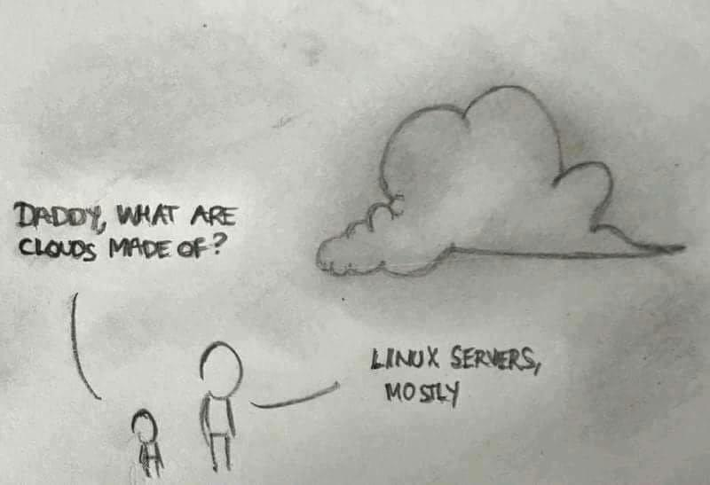

Lesson 10 - The Cloud
At the end of this lesson, you will be able to:
- Explain the difference between the 'cloud' and the 'internet'.
The Cloud
What is the Cloud? Is the Cloud the same thing as the internet or is it different?
In the early days of the internet, bandwidth was slow, so people couldn't send video (only text and small pictures). Back then, computers were huge and expensive, so people went to a computer center to do their computations. As the technology became smaller and more efficient, however, these centers became less important because people could do computations on personal computing devices.
More recently, though, certain kinds of computation (such as web searches and voice recognition) require more computational power, and these tasks are instead sent to huge "computer farms" where tens of thousands of computers work together on a problem. These computer farms, all together, are referred to as the cloud. You have been using the cloud throughout this course: all of Google Docs are stored in the cloud. You still use a computer at your desk, but some of the programs actually run on the cloud.
So why hand your computing off to someone else's machines? Two big reasons. First, access from anywhere — your Google Doc, your photos, your playlist follow you from your laptop to your phone to a library computer, because they don't actually live on any one of those devices. Second, raw power — a server farm can throw far more computing at a problem than the phone in your pocket ever could, which is exactly why heavy jobs like search and voice recognition get shipped off to it. The flip side is the catch worth remembering: you're trusting someone else's computer with your data, and you need a working internet connection to reach it. When the Wi-Fi drops (or the company running those servers has a bad day), the "cloud" can feel awfully far away.
Once you start looking, the cloud is everywhere. When you stream a show, the video is coming from a server farm, not sitting on your TV. When your phone backs up its photos automatically, those pictures are being copied to the cloud so you don't lose them if you drop your phone in a river. And when you chat with an AI assistant, the actual thinking is happening on rooms full of powerful computers somewhere else — your device is really just the messenger passing your words back and forth.
At this point, you all know a LOT more about the Internet than the average person!

Check yourself! The cloud gets talked about like it's magic mist — let's pin down what it really is.
- Strip away the fluffy name: what is "the cloud," really?
- Someone says "the cloud is just another word for the internet." Are they right?
- Give one everyday thing you do that's actually running on the cloud.
- What's one trade-off you accept by offloading your computing and data to the cloud?
Show answers
- It's huge farms of computers — tens of thousands of machines — that do computation and storage you hand off to them. There's no mist involved; the joke about clouds being "Linux servers, mostly" is basically the truth.
- No. The internet is the network that connects everything together; the cloud is the server farms doing work and holding data on the far end of that connection. You use the internet to reach the cloud, but they're not the same thing.
- Lots of options: editing a Google Doc, streaming a show, auto-backing-up your phone's photos, or chatting with an AI assistant. In each case the real storage or computing is happening on servers somewhere else, not on your device.
- You're trusting someone else's computers with your data, and you need an internet connection to get to it. That's the price of the convenience — no connection (or a company outage) means no access.